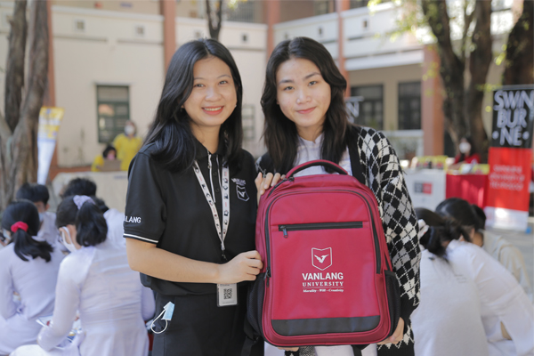
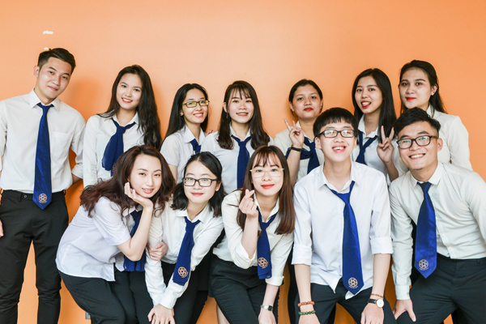
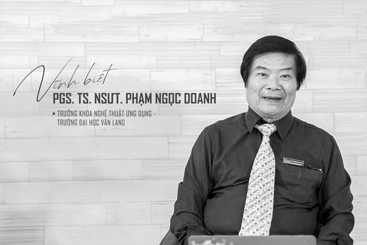
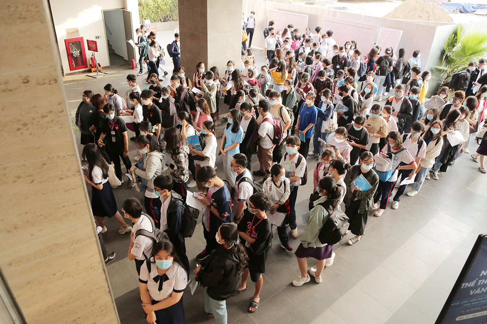
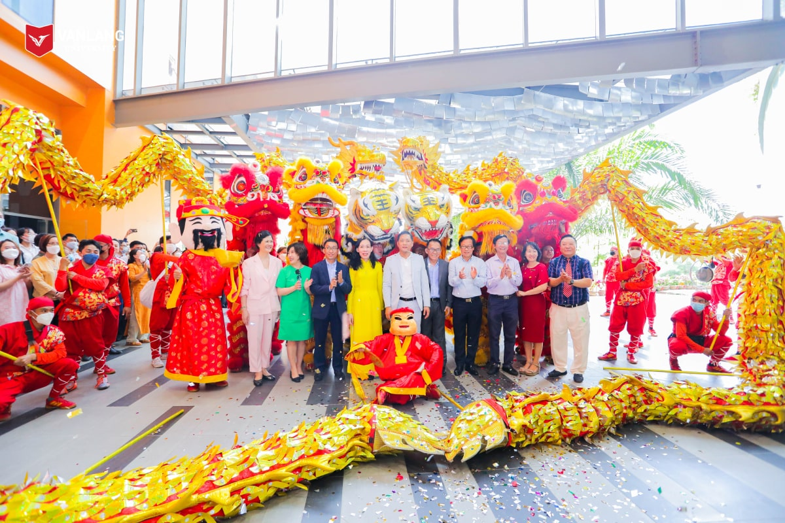
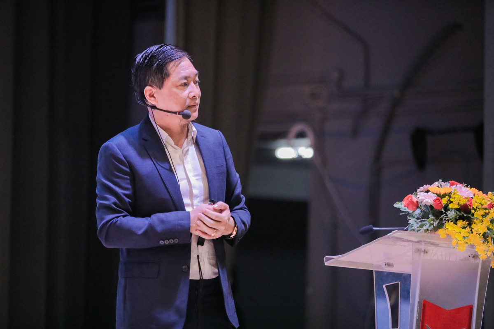

Đăng nhập
Đăng ký

Trang chủ
Giới thiệu
Học bổng
Liên hệ

Trường Đại học Văn Lang khởi động hành trình tư vấn tuyển sinh 2022
tại các trường THPT Tp.HCM

Sinh viên khóa 27 chuẩn bị cho ngày trở lại Trường Đại học Văn
Lang

Vĩnh biệt PGS. TS. NGƯT. Phạm Ngọc Doanh - Trưởng khoa Nghệ thuật Ứng dụng Trường Đại học Văn
Lang

Cơ hội đầu tiên trở thành sinh viên Văn Lang khoá 28 bằng kỳ thi Đánh giá Năng lực ĐHQG
TP.HCM năm 2022

Trường Đại học Văn Lang rộn ràng trở lại làm việc đầu năm 2022

Văn Lang - một chặng đường kiên định
Cơ sở chính: 69/68 Đặng Thùy Trâm, P. 13, Q. Bình Thạnh, TP. HCM
Cơ sở 1: 45 Nguyễn Khắc Nhu, P. Cô Giang, Q.1, TP. HCM
Cơ sở 2: 233A Phan Văn Trị, P.11, Q. Bình Thạnh, TP. HCM
Ký túc xá: 160/63A-B Phan Huy Ích, P. 12, Q. Gò Vấp, TP. HCM